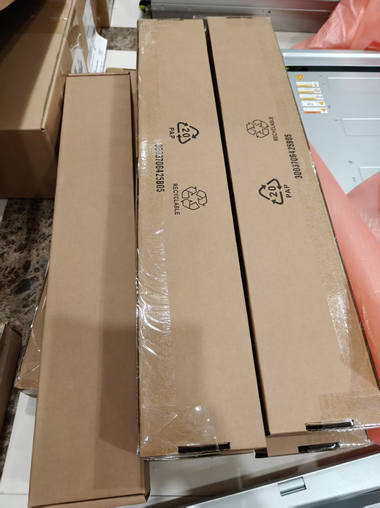
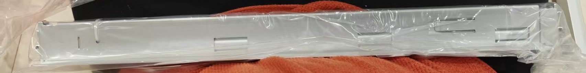
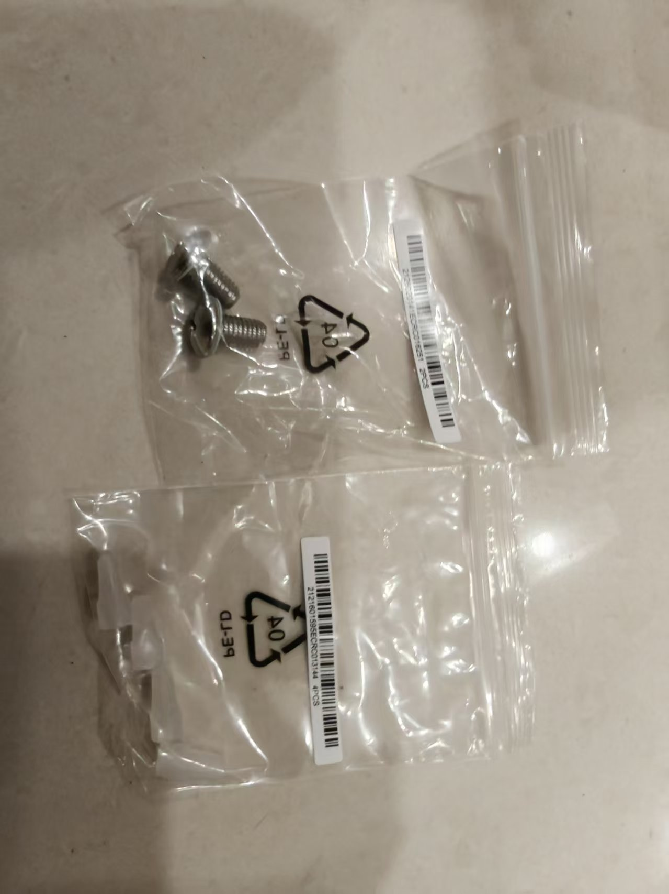
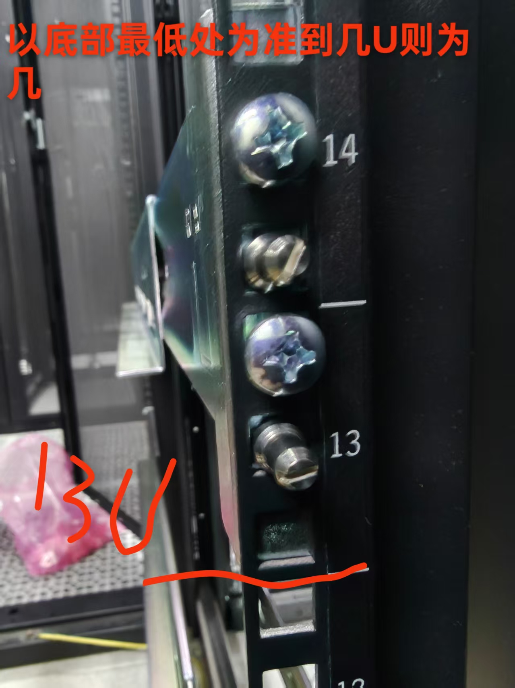
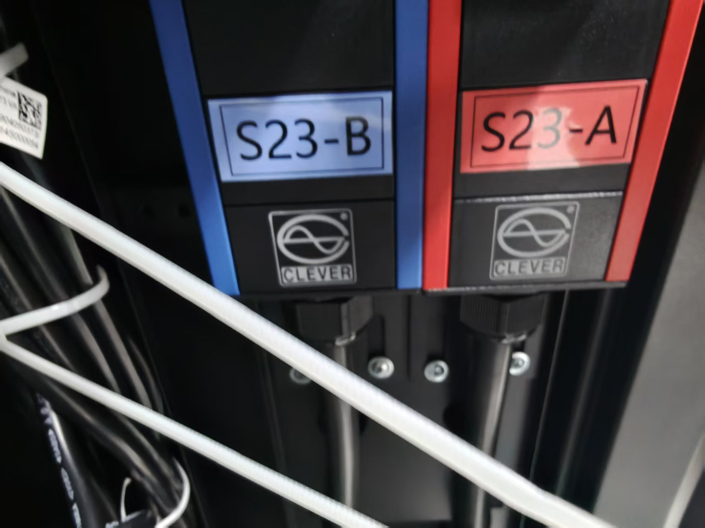
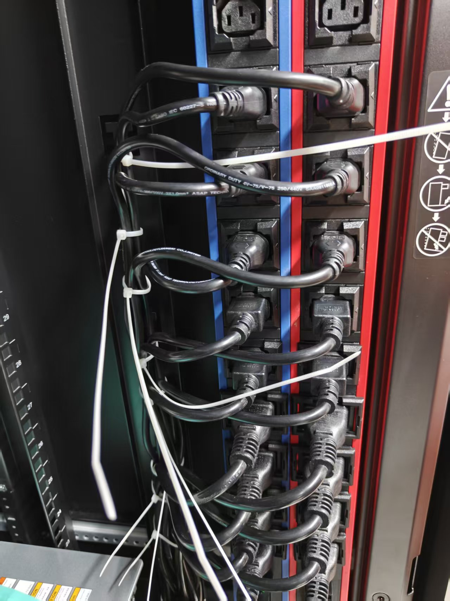
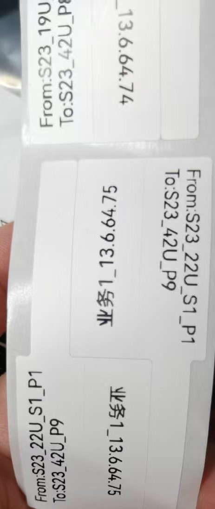
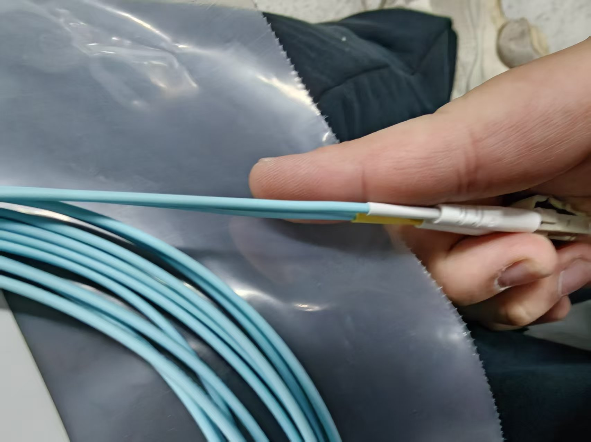

如上为机器的导轨包装，在上架前也需要拆出内容物

这是导轨，有部分有塑料绑条，可以在塑料袋内拉一下打开绑条

这是导轨的螺丝和导轨的堵头，一般无特殊要求堵头可以不进行安装
先进行导轨的安装，先与客户进行确认或按规划安装的机柜和高度，然后放置导轨，普通机器的导轨一般为前端上一颗螺丝，存储的导轨为前端两颗后端两颗
放置的高度已导轨底部为准例如13U则是导轨底部顶到13U底部如下图

机器在导轨安装完毕后就可以进行放置，放置完毕后螺丝可先不拧紧以方便后续理线。
插上电源线按照机柜上的AB插好，与机器相连一般临近的为相同字母

再进行电源线整理一般的话在同一插板上的话一台机器的用绑条绑在一起，如果不是同一个插板的话可以往下逐个绑
一般的话线从插板往下理，绑在机柜指定位置，机器部分的线平行向电源侧并绑好

最后打印好对应的AB标签贴好
打印好对应的标签，一般为fromto以及规划的IP地址，每个要一对，一根线两头标签

其中第一个S为机柜位置，U为高度，第二个S为插槽位置，P为接口位置，B为机器自带槽位
标签贴的位置大约一指左右如图所示

贴好标签以后将线的绑带拆下并一定拉直，按机柜分好如本机柜到本机柜的合成一条，一个机柜到另一个机柜的另一条，依此类推
将线从机柜顶端拉入并按标签连接(部分机柜较高可以借助梯子，且部分机柜顶较锋利主要不要划伤)
线多的部分按圈状进行缠绕后可以置于机柜顶部放置线的地方，也方便理线是的拉扯
理这部分线的时候从上向下，看下面哪根线长然后往上捋线，每一台机器的线绑一起，绑线时可以从下往上绑每条线最好能水平向一边然后竖直向上走
在理线时如果有放不到机柜指定位置的情况时可以略微将机器向后推一点将线放好在拉回来(但要记得留推拉的这一部分线)
在理完线后大部分工作都已经结束，将机器的螺丝拧紧
整理留下的物品后如无别的问题则可以结束